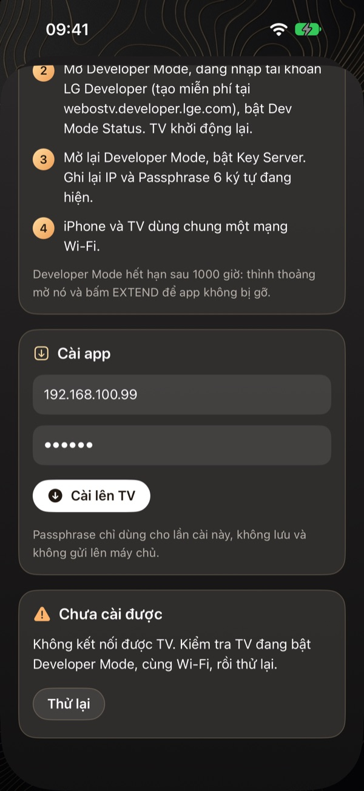
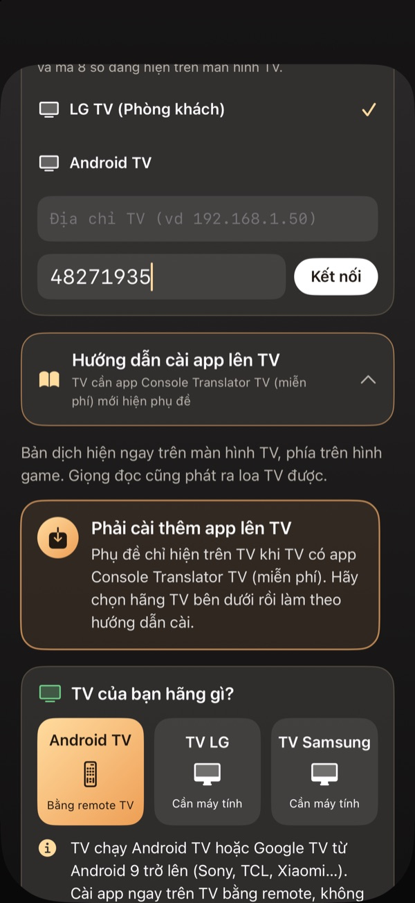

Phụ đề tiếng Việt khi chơi PS5 trên TV LG webOS
Cập nhật ngày 3/11/2026
Với TV LG webOS, bạn bật Developer Mode, cài app Console Translator TV một lần bằng điện thoại hoặc máy tính, rồi ghép với app đang chạy dịch.
Chuẩn bị TV LG
- Tạo tài khoản LG Developer.
- Trên TV, cài app Developer Mode, đăng nhập và bật Dev Mode Status.
- Sau khi TV khởi động lại, bật Key Server để xem IP và Passphrase.
- Để TV và thiết bị cài đặt chung một mạng.
Cài app lên TV
Trên iPhone, vào Phụ đề trên TV, TV LG, Cài từ iPhone, nhập IP và Passphrase rồi cài (cần gói PRO). Bạn cũng có thể dùng bộ cài Windows hoặc Mac. Chi tiết và file tải có trong hướng dẫn TV LG.

Mở app và ghép nối
Chuyển TV sang cổng HDMI của PS5 trước khi mở app trên TV, vì phụ đề hiện đè lên cổng đang xem. Sau đó ghép từ điện thoại hoặc máy tính.

Câu hỏi thường gặp
TV LG nào dùng được?
App cần TV LG webOS cho phép dùng Developer Mode. Hãy kiểm tra TV của bạn trên trang TV trước khi mua gói trả phí.
Có phải cài lại mỗi lần chơi không?
Không. Chỉ cài một lần, các lần sau chỉ cần mở app và kết nối.
Có cần sửa gì trên PS5 không?
Không, nhưng bạn vẫn cần bật Chơi từ xa và ghép app với PS5 để dịch.
Xem thêm
Xem hướng dẫn cài đặt →Console Translator là dự án độc lập, không liên kết với Sony, LG hay Samsung. Tên game và nhãn hiệu thuộc về chủ sở hữu tương ứng.